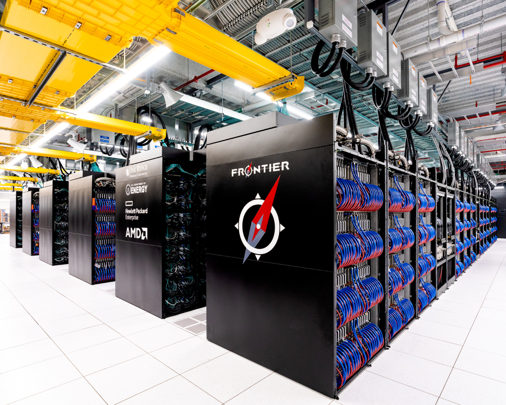
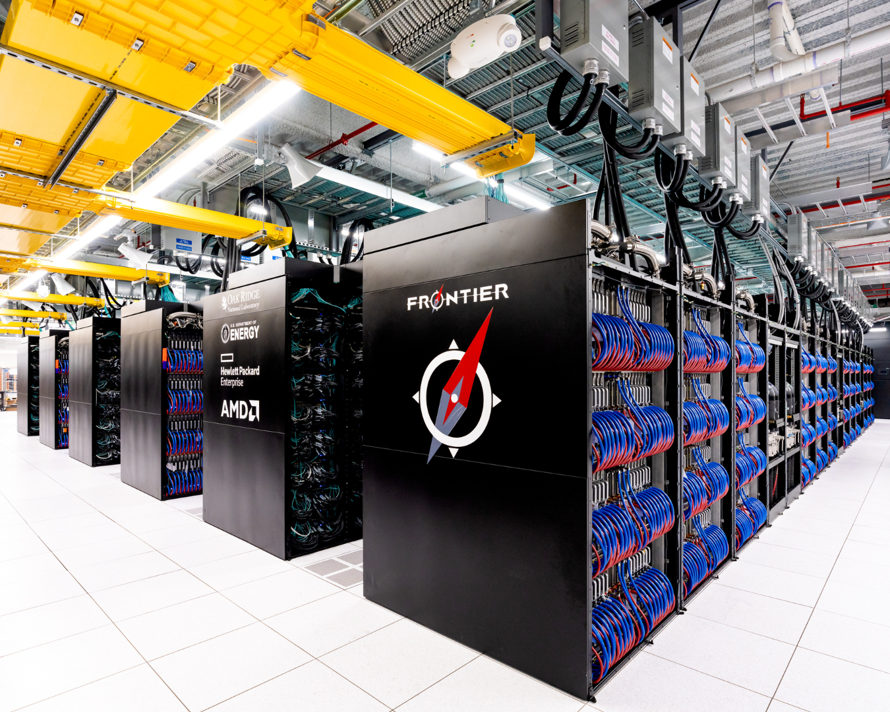
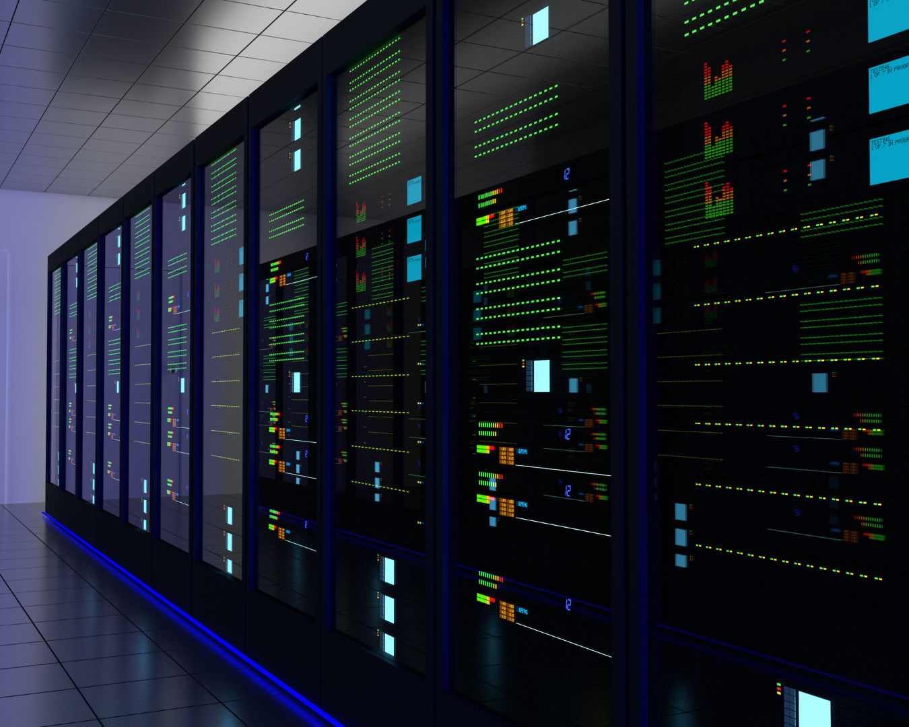
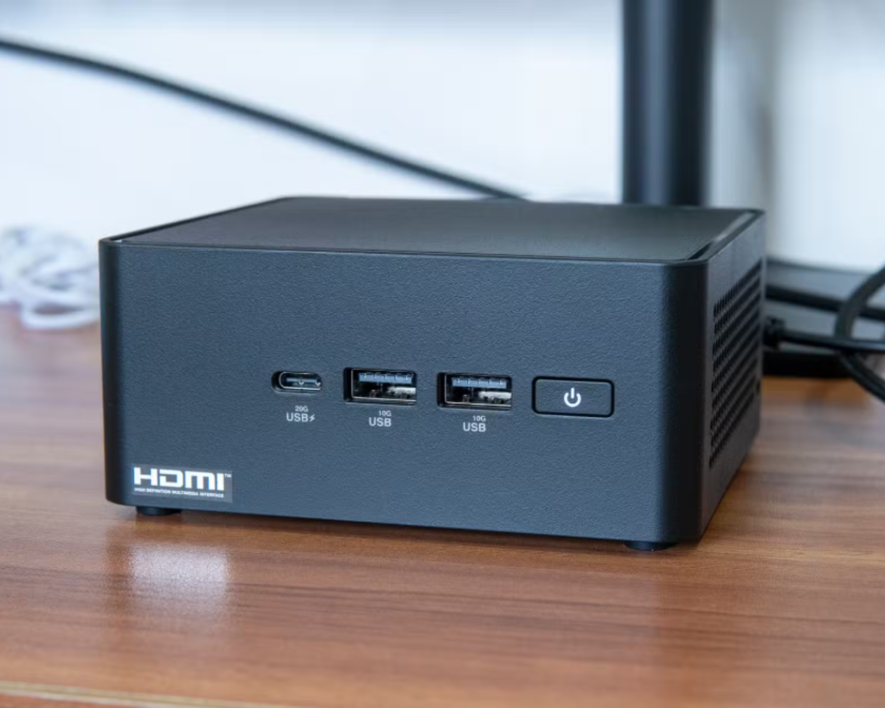
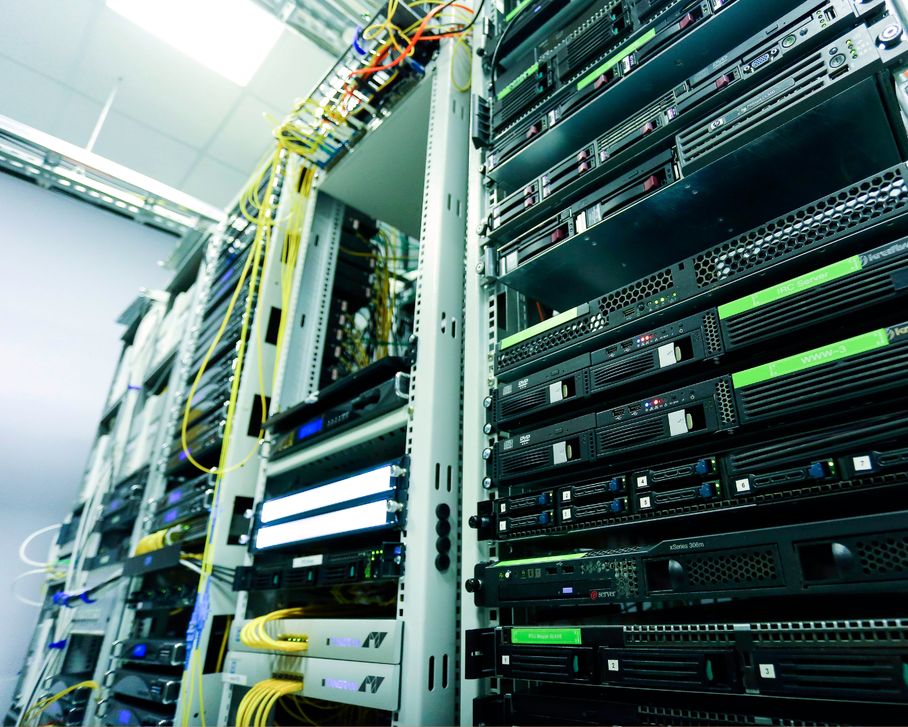
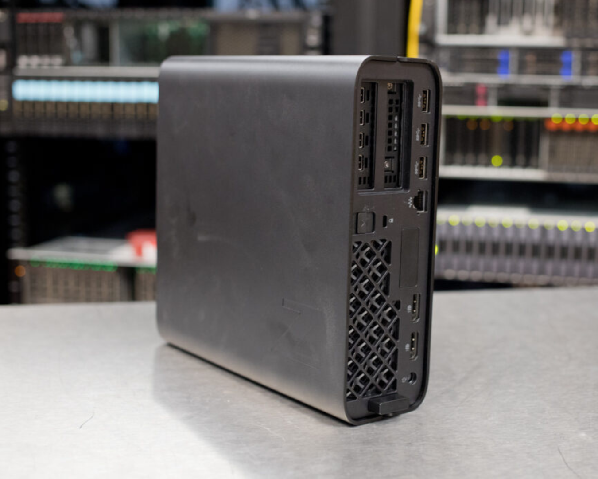

PORTFOLIO 6
COMPARATIVE STUDY ON THE DIFFERENT TYPES
OF COMPUTERS

Introduction to Computers
Technology has changed the way we do everyday tasks and work, and computers are a key part of this. Computers are powerful machines that can do things humans can't, like process large amounts of data. Companies are always looking for faster and better computers. They are essential in many areas, like research, data management, and analysis. While phones are important, computers are even more powerful and help in fields like medicine, science, and automation. Computers play a big role in making life easier and will continue to shape our future.
 

Supercomputer is currently the fastest and the most powerful type of computer in the modern age. This term is used to classify the fastest high-performance systems available with is capacity to do so much more than what a normal computer can. This computer is generally very expensive; hence, its use is usually limited to government-funded research that require high-speed computations that normal computers are not able to reach, but as the prices of these supercomputers declined, more businesses have utilized this system for their own use. Common applications for this type of computer include mathematical models, complex phenomena such as climates and weather, space studies, nuclear weapons and reactors, chemical compound research, cryptology, and many more.

Mainframe computers are digital computers designed for high-speed data processing that utilizes the use of input or output units such as large-capacity disks and printers. This type of computer is the one usually found in businesses and large companies with its most common application being its application as payroll computations, accounting, business transactions, information retrieval, airline seat reservations, and scientific and engineering computations. It is less powerful than supercomputers but is still able to perform high speed calculations that is sufficient for businesses due to its price difference with supercomputers.

The minicomputer is defined as the middle system between the Supercomputer and Mainframe Computer to the regular Personal Computers. It is smaller and less powerful and expensive that the former, but more expensive and more powerful than the latter. They were popularized in the 1960s and 1970s due to their abilities to do high speed calculations as well such as for scientific and engineering computations, business transactions, file handling, and database management, but eventually lead to its decline in popularity in the 1980s and 1990s as it was replaced with more powerful personal computers and workstations.

The Server which is also called as a network computer. Servers are computers that processes the requests of clients and works on the computations in line with what the client wants to achieve. There are various uses for servers as they are flexible in what the owner can do, whether it is for storing data or for managing other devices, the server can do a lot of things that one desires to do.

The workstation is a type of computer that is designed for a single user which has more advanced capabilities than what regular personal computers can do. It is used by companies due to its powerful abilities such as graphics capabilities, large storage capacity, and a powerful CPU that can enable high level computations and tasks. They are much more capable at rendering; hence, they are often chosen for professional settings.
Microcomputers which are electronic devices with a microprocessor as its CPU. Originally, it was used to define personal computers, particularly, small digital computers in which the CPU is contained on a single integrated conductor chip. Most common microcomputers of the modern age are the laptops and desktops, but others also consider Tablets, Smartphones, and single-board computers such as the Raspberry Pi as well as microcontrollers such as Arduino and Beagle Board as microcomputers.